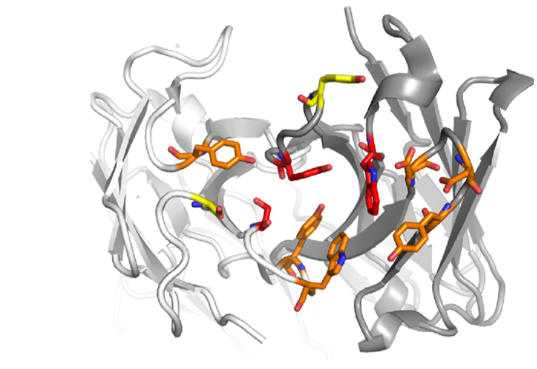

Die Stiftung Neuropath ist eine gemeinnützige Stiftung zur Förderung der Forschung auf dem Gebiet der Neuropathologie, die unter anderem die folgenden Krankheiten erforscht:
Gegründet 2006 durch die Universität Zürich und Prof. Dr. Adriano Aguzzi
|
 |